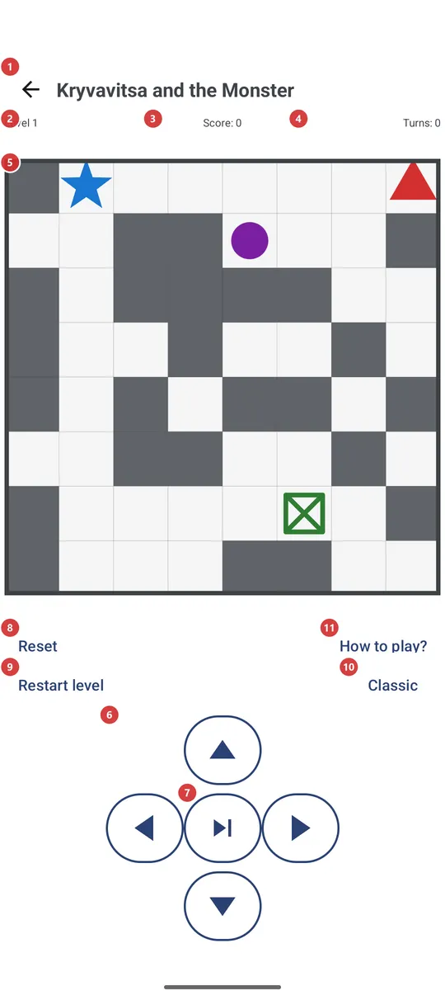
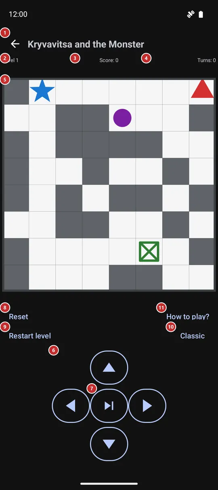

Kryvavitsa and the Monster
What this is for
A small turn-based puzzle on a grid. Lead the blue Monster to the green exit before the red Kryvavitsa and her purple helpers corner you: you move one cell per turn, the enemies answer after each move, and every level is a bigger board.


In this order
- Open the game from the programs menu, the programs panel, the launcher or a home-screen widget. It is off after installation, so switch Mini-game on first in Settings, on the Management tab, in the group Additional programs and scenarios. The game saves itself and continues where you left it.
- The first time, press How to play? 11: its own screen shows what every color on the board means and the rules.
- Move one cell per turn on the board 5: swipe anywhere on it, tap the side of the Monster where you want to go, press the arrows 6, or use the keyboard or a D-pad. After each move the enemies move too.
- Push gray walls into free cells to clear a path. If an enemy ends up on your cell or next to it, the level is lost.
- Next turn 7 skips your step while the enemies still move, for the moments when standing still is safer than moving.
- Reaching the exit gives +1000 and the next level starts by itself after a second, or at once with Next level 8. Level 2, Score 3 and Turns 4 keep count above the board.
- If a level goes wrong, Restart level 9 starts it again on a fresh board for 500 points; Reset 8 throws the whole game away and starts from level 1. Mode 10 changes how the board looks.
The elements
Top bar and counters
1BackLeaves the game and returns to where you came from.
The game saves itself after every move, so leaving does not lose your place: when you open the game again it continues with the same level, score and turns. The Back button of the device does the same.
- Shortcut
- Esc
2LevelShows which level you are on.
You start at level 1. The board grows as the level goes up - 8 by 8 cells at first, one cell more every third level, up to 20 by 20 - and more purple enemies appear on it.
3ScoreYour points: moves cost, pushes and the exit pay.
Every turn costs 10 points, also a skipped one. Pushing a wall gives +10, crushing a purple enemy +50 and reaching the exit +1000. The score never goes below zero. Restarting a level costs 500 points.
4TurnsHow many turns you have played in this game.
A step and a skipped turn both count. The number keeps growing from level to level and starts again from zero only when you reset the game.
Board and moves
5Game boardThe playing field: the Monster, the exit, the enemies and the walls.
Blue is the Monster you control, green is the exit, red is the Kryvavitsa that hunts you, purple are her lesser helpers that wander at random, gray blocks are walls you can push, and the thick border cannot be crossed. A swipe in any direction, or a tap above, below or beside the Monster, moves it one cell that way; a tap right on the Monster does nothing. When you are caught, a line joins you to the enemy and a short message appears.
6Arrow buttonsFour buttons that move the Monster one cell up, down, left or right.
They do the same as a swipe or a tap on the board, which makes them handy when you prefer buttons or play with one hand. A move into the border or into a wall that cannot be pushed is refused and costs nothing. The keyboard works too: the arrow keys, W A S D or the numeric keypad.
- Shortcut
- Arrow keys / W, A, S, D / Numpad 8, 4, 2, 6
7Next turnLets the enemies move while the Monster stays where it is.
It counts as a turn and costs 10 points, like a step. Use it when every step would bring you next to an enemy and waiting is safer.
Game actions
8ResetStarts the next step of the game: a new game, the next level, or a restart after a defeat.
Its label follows the situation. While you are playing it reads Reset and starts a brand new game from level 1, with score and turns at zero, without asking. After you reach the exit it reads Next level and moves on to the next board. After you were caught it reads Restart level and tries the same level again on a fresh board.
- Undo
- Reset throws away the level, score and turns of the running game, and there is no way back to them - only a new game from level 1. Restart level after a defeat costs 500 points.
- Shortcut
- Enter / Space / D-pad center
9Restart levelStarts the current level over on a fresh board when you are stuck.
The level number stays, the board is generated again, and the price is the same as being caught: 500 points, never taking the score below zero. The button is shown only while a level is running; after a defeat the main button takes this label and does the same.
- Undo
- The current board and 500 points are lost, and the old board does not come back.
- Shortcut
- R
10Game modeChanges how the board looks: Classic, Kryvavitsa or Contrast.
The button carries the name of the current mode. Press it to open the list Game mode and pick another one. Classic draws colored balls, Kryvavitsa draws figures - a man, a woman with a machine gun, women with knives, a door - and Contrast uses solid tiles in the classic colors. Only the look changes: the rules, your position and your score stay as they are. The choice is remembered.
11How to play?Opens the game's own help screen with the legend and the rules.
The screen is called How to play and has its own Back button. It tells the goal, shows what each color or figure on the board means (it follows the mode you chose) and lists the rules and the score. Close it to return to your game exactly as it was.